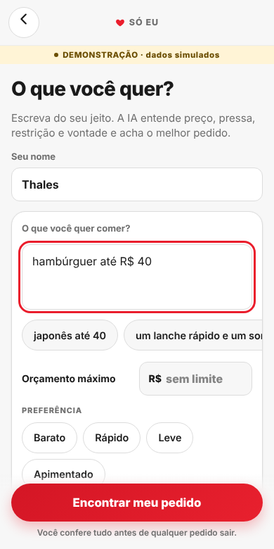
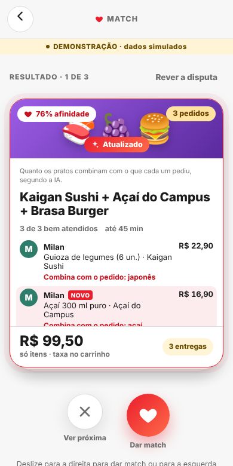

Match
Pedido em grupo sem dor:
cada um fala o que quer, o IBits monta, divide a conta
e pede pelo iFood.
Thales Miguel Hajes · Milan · Zenon · Antonio — Hackathon SEMCOMP × iFood "Vendendo com Agentes" · São Carlos · 18/10/2026
Todo grupo tem um "gerente do pedido"
- Pergunta no WhatsApp o que cada um quer
- Procura loja que agrade todo mundo (e o vegetariano?)
- Confere se cabe no bolso de cada um
- Monta o carrinho, adianta o dinheiro e cobra o Pix depois
E quanto tempo isso leva?
No Brasil, não achamos nenhum número público sobre pedido em grupo.
Fora daqui: no Reino Unido, quase metade dos entrevistados diz que um grupo leva em média 25 minutos para escolher onde comer.
Pesquisa de 2018, encomendada, amostra não informada, sobre restaurante (não delivery). Só como apoio.
Uma frase de cada um. O resto é com o IBits.
Cada um fala
Entra pelo QR, sem login, e escreve do seu jeito: "japonês e um sorvete, até R$ 45".
O IBits monta
Lê o cardápio de cada loja no iFood e combina itens de até 3 lojas, com o motivo de cada escolha.
Divide a conta
Junto ou cada um paga a sua parte. A taxa de cada loja só entre quem pediu dela.
Pede pelo iFood
Carrinho pelo MCP do iFood. Nada sai sem o ok do organizador.
Só o organizador usa o iFood. Comendo sozinho? "Só eu": uma tela, uma frase, o mesmo agente.


Demo ao vivo DEMONSTRAÇÃO
Thales organiza no projetor. Três amigos entram pelo QR, sem login:
Milan: "japonês e um sorvete, até R$ 45"
Zenon: "hambúrguer e sorvete, até R$ 50"
Antonio: "algo barato e vegetariano, até R$ 25"
Sala → frases → Rodar Match → opções → Ajustar com o IBits → divisão da conta → carrinho.
Plano B: vídeo gravado com o mesmo roteiro.


Conversa com o agente. Conta com o código.
- O agente entende quem e o quê, e muda só o pedido dessas pessoas
- As ferramentas decidem: busca no MCP, combinação, preço e divisão são código
- Não entendeu? Ele diz: "Não entendi quem ou o quê", com um exemplo. Não chuta
POST /api/salas/{id}/ajustar; teste backend/tests/test_ajuste.py.Do restaurante ao fechamento do carrinho, pelo MCP
- Entende a frase de cada um
- Avalia cada loja: um avaliador por loja, que só lê o cardápio dela
- Escolhe a melhor combinação
consumidor · OAuth
lojas, cardápio, preço, taxa, carrinho e pedido.
Número só vem daqui.
Já verificado no MCP real
Agente IBits aprovado no portal · conta de teste · login OAuth · list_tools com 23 tools.
Pedido real, com trava
No modo real, o carrinho vai para a conta de teste e taxa e total vêm do getCart.
submitOrder só com o ok na tela e IFOOD_MCP_PERMITIR_ENVIO=true. No real, nunca Pix nem cartão online: só pagamento sem cobrança no app (ex.: dinheiro na entrega).
backend/app/match/busca.py, checkout.py · diagnóstico real: 17/10/2026.Um agente em quem dá para confiar
Explica o porquê
Cada item vem com o motivo ("combina com o pedido: japonês"). O rastro mostra cada tool chamada no MCP.
Afinidade = quanto os pratos combinam com o que cada um pediu, segundo a IA. Não é satisfação medida.
Respeita limites
Orçamento de cada um. Restrição só é afirmada se o cardápio tem a etiqueta. Passou de 3 lojas? Avisa o que ficou de fora.
Pede o seu ok
Nada sai sem confirmação. Na vaquinha, só com 100% pago. getCart de novo antes de enviar: se o total mudou, para e pergunta.
A IA nunca escreve preço. Preço, taxa e prazo vêm das tools do MCP; fala com número que não veio de lá é trocada por texto conferido.
docs/tecnico.md; backend/tests/test_leilao.py, test_checkout.py, test_acerto_pix.py.Pedido em grupo já existe. Montado por agente, não.
| Rappi (Brasil) | Uber Eats | DoorDash | Ailo (iFood) | Match | |
|---|---|---|---|---|---|
| Pedido em grupo por link | sim | sim | sim | não citado | sim, convidado sem login |
| Mais de 1 loja | não encontrado | 2 lojas próximas | DoubleDash | não citado | até 3 (avisa as taxas) |
| Quem escolhe os itens | cada um, à mão | cada um, à mão | cada um, à mão | IA, para 1 pessoa | agente, para o grupo |
| Só sai com 100% pago | não encontrado | não encontrado | não encontrado | — | sim |
O Ailo já fecha um pedido em ~30 segundos. Falta o pedido da turma.
Escala do iFood: 180 mi+ pedidos/mês, 65 mi de clientes, 500 mil+ lojas. Quantos são de grupo? Não há dado público; não estimamos. HIPÓTESE mais pedidos de grupo e mais lojas por ocasião.
Próximos passos
Piloto em São Carlos PROPOSTA
- 4 semanas, repúblicas e turmas
- Grupo A com "Dê um Match" na home; grupo B como hoje
- Meta combinada com o iFood antes (não chutamos número)
O que pedimos ao MCP
- Documentar o
userLocation(sem ele a busca volta vazia) - Doc com 24 tools; servidor com 23
- Publicar o formato de resposta (
listAddressesveio diferente)
Ideias para o MCP: pagamento dividido e várias lojas numa entrega.
docs/proposta-negocio.md §5 · Feedback completo do MCP (entregável 6): docs/feedback-mcp.md, testes da equipe em 17/10/2026.Cada um fala o que quer, o IBits monta,
divide a conta e pede pelo iFood.
Match: ninguém mais vira gerente do pedido. Obrigado!